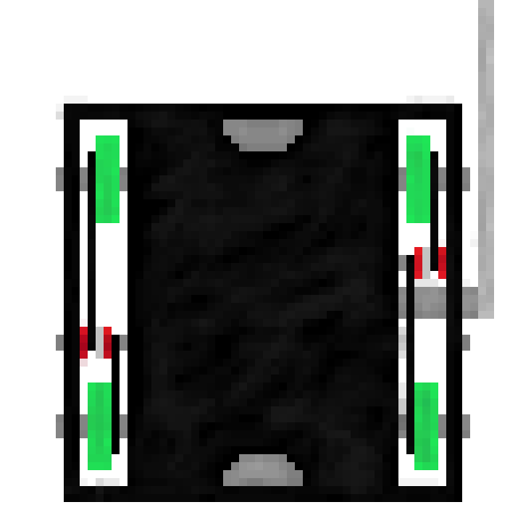

Lance
| Stats | |
|---|---|
| Height: | 3" |
| Weight: | 12 lbs |
| Fights: | 2 |
| Wins: | 1 |
| Top Speed: | 8 mph |
| Weapon Speed: | 20 mph |
| Most Damaged Part: | Weapon Motor |
| Favorite Movie: | First Knight |

Lance
Description
The Lance is probably the best-known BattleMech to ever set foot on the modern battlefield. Designed with specifications from Aleksandr Kerensky himself in 2755[2] in the midst of the Cameron Edicts, the Lance was originally intended to ensure SLDF superiority over the Star League member states. Though the inexorable arming of the Great Houses continued, the Lance proved itself to be everything General Kerensky requested. With the largest amount of armor of nearly any 'Mech, crippling firepower, and the foreboding skull-shaped "Death's Head" cockpit/head assembly, the Lance lived up to its reputation. The mere sight of an Lance had been known to make even a veteran MechWarrior break out in a cold sweat, and theoretically a single Lance can take on and wipe out an entire battalion of Stingers in exchange for minor armor loss.
Design
The Lance is armed with a multitude of weapons for both long and short range combat, all designed specifically to be as visible as possible so as to strike fear in the hearts of its enemies. For long ranges, the 'Mech carries a FarFire Maxi-Rack LRM-20 in the left torso that allows it to both fire directly at an enemy target at long range, and to give indirect fire support when needed. Unable to fit a full twenty-tube system on the 'Mech, the FarFire instead launches the missiles in waves of five over the course of ten seconds and carries two tons of reloads for twelve such salvos. For close range combat the 'Mech is armed with a Defiance 'Mech Hunter Autocannon/20 in the right torso with two tons of ammo. Although lacking a cooling jacket and liable to overheat, the massive autocannon gives the Lance the firepower to take on an entire 'Mech company. To back up the AC/20 the Lance carries four Defiance B3M medium lasers, one in each arm and two mounted in the rear center torso, and a TharHes Maxi SRM-6 launcher with one ton of missiles in the left torso (the aperture between the SRM and LRM launchers is not another weapon but an omnicoupling for power and coolant cable connection). Furthermore the Lance is equipped with hand actuators which, combined with its sheer weight and power, makes it a potent hand-to-hand fighter. Accounts of Lancees actually picking up medium-weight 'Mechs and throwing them around like toys makes for suitable horror stories and further enhances the aura of the 'Mech.
Fights:
| Opponent | Result | By | Video | Length (s) |
|---|---|---|---|---|
| Woody 2 | Win | KO | Link | 61 |
| Woody 2 | Loss | Judges | Link | 180 |
Featured Fight:
Media: